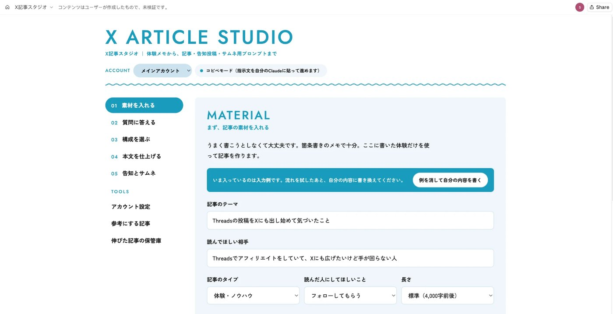
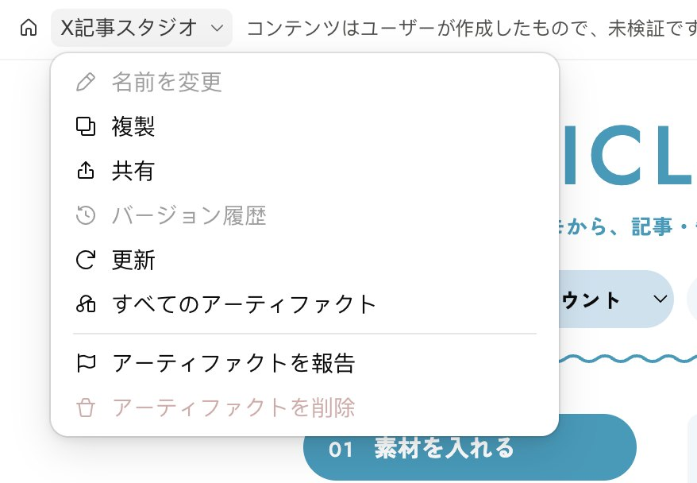
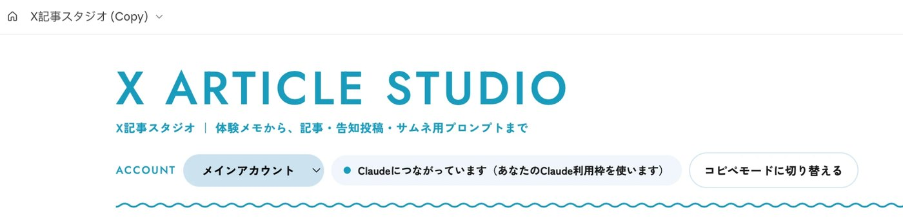
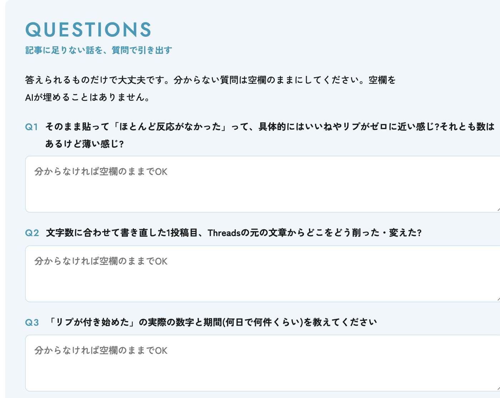
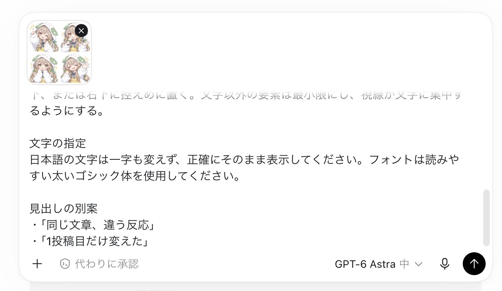
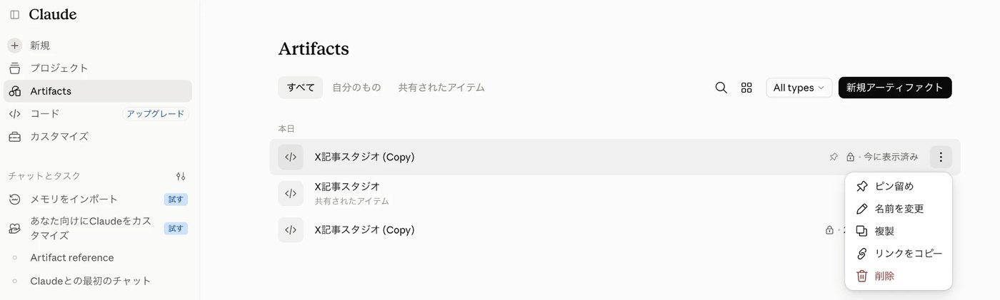
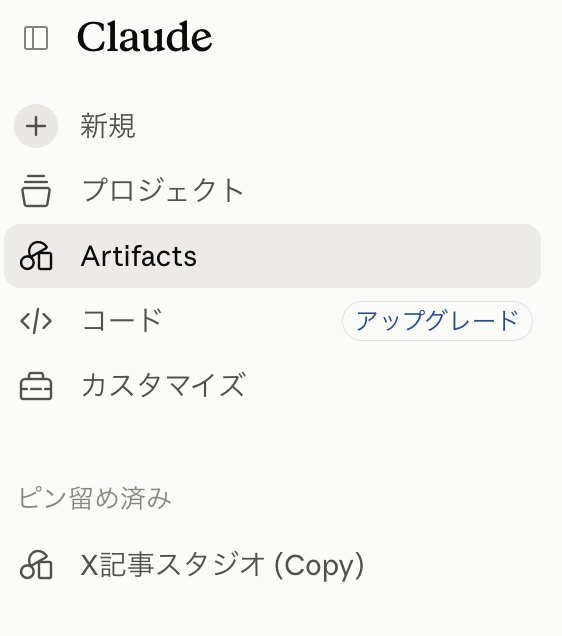

X攻略note ご購入者さま特典
体験メモから、
Xの記事を最後まで。
箇条書きのメモを入れるだけ。足りない話を質問で引き出して、構成・本文・告知投稿・サムネ用のプロンプトまで、ひとつの画面で仕上げる記事作成ツールです。自分のClaudeの中で動くので、追加の料金やAPIキーはいりません。
画面イメージ タブを押すと、各ステップの画面が見られます
MATERIAL
まず、記事の素材を入れる
記事のテーマ
記事にしたい内容（体験メモ）
QUESTIONS
記事に足りない話を、質問で引き出す
Q1そのまま貼っていた時期は、何本くらい試しましたか？
Q21投稿目を、具体的にどう書き直しましたか？
Q3まだうまくいっていないことは何ですか？
OUTLINE
タイトルと構成を選ぶ
WRITING
本文を仕上げる
3,842字 ・ 原稿用紙 10枚
PROMOTION
告知投稿とサムネ用プロンプト
告知投稿（1本）
サムネ用プロンプト（ChatGPTに貼る）
入力していない実績や数字を、AIが勝手に足すことはありません。足りないところは【要追記】という穴のまま残るので、自分の言葉で埋められます。
真似したい発信者さんの記事を貼ると、ブロックの順番と役割だけを取り出します。文章や体験談は写さず、中身は自分の素材で書きます。
記事への入口になる告知投稿を3種類。さらに、ChatGPTに貼るだけのサムネ用プロンプトまで一緒に出てきます。
先に claude.ai にログインしておき、「X記事スタジオを開く」を押します。この時点では上の表示が「コピペモード」になっていますが、それで合っています。

画面左上のツール名を押して「複製」を選ぶと、あなた専用のコピーができます。コピーの持ち主はあなたなので、ここからはあなたのClaudeで動きます。

コピーを開いて10秒ほど待つと、上の表示が「Claudeにつながっています」に変わります。次からはこのコピーを使うので、すぐ開けるようにしておきます。やり方は、この下の「自分のコピーを取っておく」を見てください。

左の「アカウント設定」で、自分らしい投稿を3〜10本貼ります。これが口調の見本になります。複数アカウントを運用している人は、ここでアカウントを追加できます。
「参考にする記事」に、構成を真似したいXの記事の本文を貼って「構成を分解してもらう」。骨組みだけが保存され、次から選べるようになります。
テーマ・読んでほしい相手・記事にしたい内容を入れて「足りない話を質問してもらう」。初回だけ「Claudeの利用枠を使ってよいか」の確認が出るので、許可してください。

質問構成本文告知 の順に、ボタンを押すだけで画面の中に出てきます。本文は自由に書き換えられ、選んだ部分だけ直してもらうこともできます。
「記事をコピー」を押して、Xの記事の編集画面に貼り付けます。反応がよかった記事は「保管庫に入れる」で取っておけます。
最後の画面に出てくるサムネ用プロンプトをコピーして、ChatGPTに貼ります。自分のキャラクターを入れたいときは、先にキャラの画像を添付してから、同じメッセージにプロンプトを貼って送信します。

複製がうまくいかないときは、コピペで使える予備のページがあります。予備のページを開く 指示文をコピーして自分のClaudeに貼り、返事を貼り戻す方式です。機能は同じです。
複製してできたコピーは、あなたのClaudeの中に保存されています。次からすぐ開けるように、下のどちらか（両方でもOK）をやっておいてください。
Claudeの左のサイドバーで「Artifacts」を押すと、自分のアーティファクトの一覧が出ます。「X記事スタジオ (Copy)」の右にある ⋮ を押して「ピン留め」を選ぶと、サイドバーにいつも表示されるようになります。
コピーを開いた状態で、アドレスバーの右にある ☆ を押します（Chromeの場合）。次からは、お気に入りから開けます。開くときはClaudeにログインした状態にしてください。
サイドバーの「Artifacts」を押せば、いつでも一覧に戻れます。名前に (Copy) が付いているほうが、あなたのコピーです。


複製する前のページを開いているか、Claudeにログインしていない状態です。ログインしたうえで、左上のツール名から「複製」してできた自分のコピーを開いてください。それでも変わらないときは、予備のページ（コピペ方式）でも同じことができます。
1記事で、質問・構成・本文・告知の4回ほどClaudeを呼びます。ふだんのチャットと同じ扱いで、あなたのプランの上限の範囲で使えます。上限に当たったら、時間をおいて続きから再開できます（下書きは残っています）。
使えますが、最初の「複製」と長い記事の編集は、パソコンのほうが楽です。
なりません。ツールは開いた人のブラウザの中だけで動いていて、ほかの人の利用とは完全に別です。
ツールが保存するのは構成の骨組みだけで、指示文にも「元記事の文章・体験・数字は使わない」と入れてあります。それでも公開前に、自分の目で一度読み直してください。
画像生成では起きやすい現象です。ツールの最後の画面に「直してほしいときの頼み方」を載せているので、そのままChatGPTに送ってください。
ご購入者さまご本人の利用に限ります。このページやツールのURLを、ほかの方に共有することはご遠慮ください。
SHIO AI SCHOOL